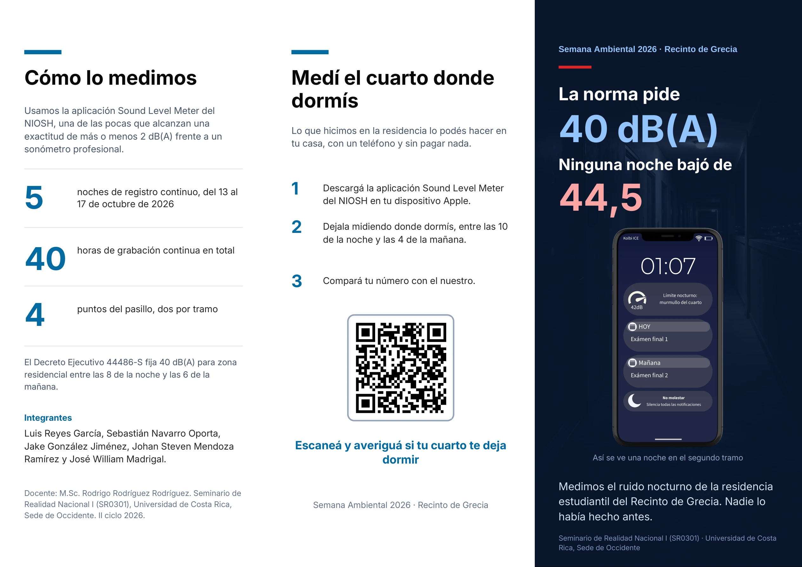
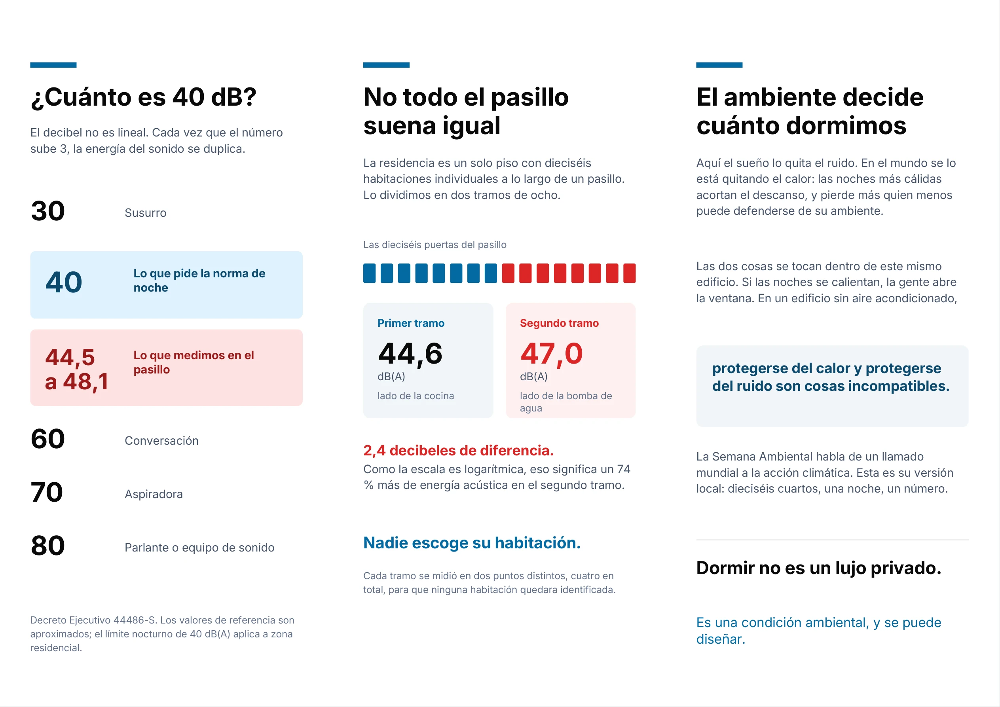

✦ · ✧ ·
💤
DÍA 1 DE 7 · LUNES
Una semana por delante
Ambiente tranquilo
🎧 La habitación empieza a cobrar vida...
Son las 11:45 p. m. Tienes clases temprano, tareas pendientes y una residencia que nunca parece dormir. Tú decides qué hacer.
⏱ 4–6 minutos · 7 decisiones · 🎧 Con música y sonidos ambientales
Las situaciones son ficticias y tienen fines educativos.
Fiestas, risas, pasos, puertas y conversaciones te rodean mientras decides.
Cada noche afecta tus indicadores simulados de descanso, energía y concentración.
Descubrí nuestro tríptico de Semana Ambiental sobre el ruido nocturno en residencias.
Escribe tu nombre o un apodo. Tus decisiones afectarán el descanso, la energía y la concentración. Para ganar, deberás conservar los tres indicadores en 70% o más y evitar acumular demasiada deuda de sueño.
Cada día tiene un costo. ¡Busca el equilibrio para ganar!
Conocé las mediciones del ruido nocturno en las residencias del Recinto de Grecia. Leé el brochure panel por panel o mirá sus dos caras completas.
👆 Deslizá para ver el siguiente panel. Abajo podés desplegar las dos caras originales.
El PDF original tiene dos páginas A4 apaisadas, con tres paneles por cara. Abrí una imagen para verla más grande.

